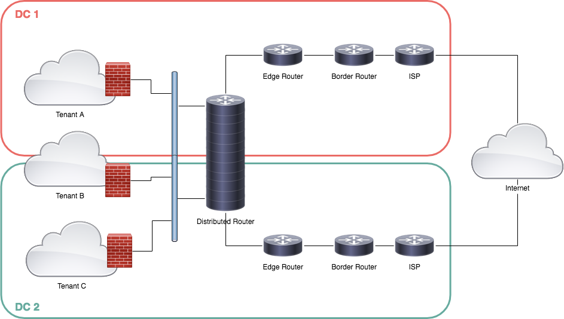
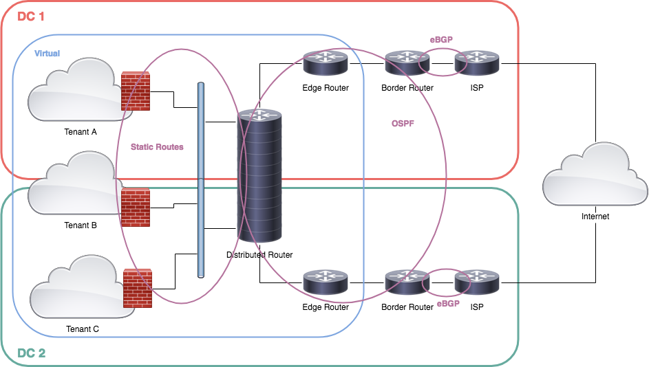
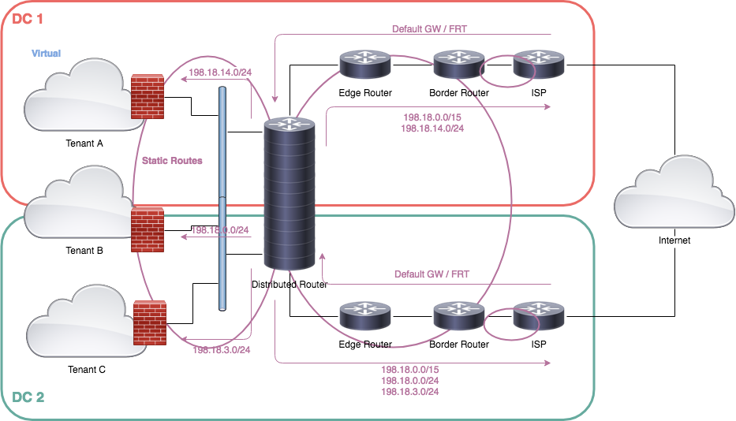
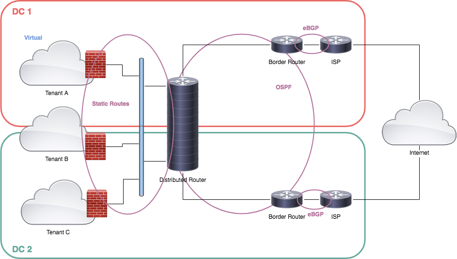

Designing a cloud provider with both VMware NSX and Cisco ACI¶

A few months ago I had a chat with a customer about IaaS. The customer wanted to change its business model from an internal-only ICT to an IaaS-style ICT, for both internal and external users.
The customer's prerequisites were:
- Infrastructure distributed across two data centers, 30 km apart.
- Ability to move workloads transparently between the two data centers.
- Users able to do everything through a self-service portal.
These prerequisites are not enough, of course: customers often do not know what they want. After an additional chat, we agreed on:
- High Availability Zones: each data center must be designed to be completely independent. The data centers are interconnected with redundant 100GbE links.
- Mobility: workloads can be moved transparently from one data center to the other. Tenants usually run in one data center only, except when moving. Latency is accepted because moving is a temporary and planned event. The idea is that users get space in a data center, but they can be moved to the other one. Users cannot buy space in both data centers to deliver distributed applications.
- Physical devices: physical devices can be added to specific tenants, for example ISP routers, Oracle Exadata, IBM AS/400 and HSMs.
- Connectivity: each tenant can be reached from outside via remote access VPN and site-to-site VPN. External connectivity such as MPLS/VPLS can be used too. Each tenant can rent some public IP addresses or just use the assigned ones. Tenants can be interconnected if they have non-overlapping IP addresses.
- Storage: Fibre Channel storage is not stretched between the data centers.
- Self-Service Portal: users cannot do "everything", only a set of defined actions.
- Backup and Disaster Recovery: users can buy backup (BaaS) and/or disaster recovery (DRaaS) features on a per-VM basis.
The Very High-Level Design (HLD)¶
We should not discuss the choice of technology at this level, but every technology has its own prerequisites, features, limitations and peculiarities, so we cannot go far without making assumptions.
The "mobility" prerequisite is one of the most stringent: moving workloads without disruption (vMotion) means that LANs must be stretched. To stretch LANs, we can use one of the following:
- Standard VXLAN.
- Cisco ACI.
- VMware NSX.
This post focuses on VMware NSX and Cisco ACI, so I do not discuss standard VXLAN. The step between standard VLANs and Cisco ACI or VMware NSX is short, though.
Let's start by designing a big picture:

Each data center is connected to the Internet through one or more ISPs, announcing the same prefixes via BGP from the border routers. The border routers are connected to the inside routers and then to a distributed router.
A firewall connected to the distributed router isolates each tenant.
The diagram is inspired by VMware NSX, so let's discuss it in detail.
VMware NSX¶
Let's look at the diagram again:

Each border router is connected to one or more ISP routers. Both border routers announce the same prefixes with the same AS. In other words, from the Internet both data centers look like a single data center with two independent exits.
The border routers also announce the prefixes of the users directly. Because of NSX limitations (discussed below), BGP peering between tenants and border routers is not permitted.
Both border routers also run OSPF, each peering with an edge router. An edge router (in the NSX world) is a clustered VM that acts as a router with some additional features such as NAT, firewall, load balancer and IPsec concentrator.
In this design, both edge routers are just routers, nothing more.
Both edge routers peer (OSPF) with a distributed logical router (DLR). A DLR is a router stretched across one or more physical servers running ESXi. On the other side, the DLR is connected to a stretched network.
Each tenant has its own gateway, implemented by a non-VMware firewall.
Let's discuss some VMware NSX limits and the design choices above. Note that the limits may have changed in the meantime, so feel free to add your opinion in the comments.
- The edge routers cannot be moved (vMotion) automatically between data centers: a workload cannot be moved from DC1 to DC2 without manual intervention. We can still destroy a cluster of edge routers and recreate it in the other DC using the old configuration, but this is obviously a disruptive approach. Using non-VMware clustered firewalls lets us move one node at a time. Edge firewalls can also offer remote access VPNs, site-to-site IPsec VPNs and so on. Because the firewall can be moved to the other data center without changing any IP address, the "outside" network must be stretched between data centers.
- The DLR cannot run OSPF facing the firewalls, so static routing is the only option. Each firewall uses the DLR as its default gateway, and the DLR forwards the packets destined to the public IP address assigned to each tenant. The DLR also cannot peer with the border routers directly. That is why edge routers are used between the DLR and the border routers.
- The smallest network that we can announce to the Internet is a
/24, so we can assume that several tenants share the same/24network. In this case, we should try to run all those tenants in the same DC. The nearest border router announces a more specific network, so all the traffic enters from the right link.

Distributed Firewall with VMware NSX¶
VMware NSX provides a distributed firewall to implement micro-segmentation. It sounds great, but the distributed firewall policy is a single one, shared by all tenants. In a multi-tenant environment, a single policy is not a great idea: every user has specific needs, and the policy cannot grow forever.
The distributed firewall was not in the feature list, but I think it is still a nice-to-have feature. How can we adapt a single-policy firewall to a multi-tenant environment?
We could use tags. Each VM can be tagged and get specific firewall rules.
Assume, for example, the following tags:
server_HTTP.server_HTTP_Proxy.client_HTTP_Proxy.allow_any.
We can write a policy like the following:
- VMs tagged with
allow_anyreceive any traffic. - VMs tagged with
server_HTTPreceive HTTP connections. - VMs tagged with
server_HTTP_Proxyreceive connections fromclient_HTTP_ProxyVMs only.
In this scenario, which refers to the distributed firewall only, not to the edge firewall, each user knows what the policies are, and tagging the VMs lets them honor or bypass the firewall.
Availability Zones with VMware NSX¶
One of the prerequisites is the independence of the data centers, so we must design the infrastructure to stay alive even if an entire data center is lost.
Remember that users can run VMs in one data center at a time. Letting users run VMs in both data centers is not so difficult, but it is not part of the prerequisites.
In the VMware NSX world we have:
- NSX Manager: the management plane of the network. Each NSX Manager is bound to a single vCenter.
- NSX Controllers: the control plane of the network. Three controllers must exist, and two must be alive. If only one controller or none is alive, all VMs "should" run fine as long as nothing changes (no vMotion, no power-on...).
- vCenter.
- PSC.
- Active Directory.
- vCloud Director / vRealize Automation.
- ...
Because we need two independent data centers, we need one NSX Manager and three NSX Controllers per data center. In this configuration, we must be sure that we can move (vMotion) VMs between data centers. In other words, we must be able to move VMs between:
- vCenters (that is fine).
- vCloud Director / vRealize Automation instances (probably not possible: the best option is a disruptive export and import).
Moreover, we have to define the virtual networks as universal. In previous vCloud Director and vRealize Automation versions, users cannot create a universal virtual network: an administrator must create it manually.
If we relax the prerequisite, we can have a single stretched infrastructure with one NSX Manager, three NSX Controllers and one vCenter. In this case, VMs can be moved without issues, but we must consider how to recover from the loss of a data center containing unique infrastructure VMs (NSX Manager, NSX Controllers, vCenter...).
To be more specific, one data center runs two NSX Controllers and the other runs just one. If the first data center is lost, the NSX Controllers cluster loses quorum. At that point, we must redeploy one NSX Controller manually in the surviving data center.
Backup and Disaster Recovery¶
Backing up VMs and mirroring them to the remote data center is not too difficult. The hardest part is restoring a backup or activating the VM in the remote data center.
As mentioned before, a VM can be imported into vCloud Director / vRealize Automation, but we must run deep tests to check whether everything works. I refer especially to tags, networks and service portal accounting.
Onboarding¶
The onboarding service is usually omitted from many designs. As an architect, I can say that this is the most critical part for many users: how do we migrate a physical, legacy data center to a cloud provider with minimal disruption? Many enterprises do not know what is running in their data centers, and they often do not have the skills to plan a move. This can be a business opportunity and an enabler for the IaaS service.
For VMware, there is a lot of good software such as Veeam and Zerto. All of them have different costs, features and compatibility lists.
Physical Devices Attached to VMware NSX¶
Last but not least, VMware NSX allows extending L2 networks to a physical domain. We must test high availability and convergence timers to be sure that they are compatible with the SLA.
Even if this works fine, it seems to me that such connections are not easy to maintain if their number increases a lot. Moreover, they probably must be configured manually, because they are not part of the default vCloud Director / vRealize Automation scripts.
Conclusions for the VMware Design¶
I hope you now understand why this design is closely tied to the technological choice. Running the infrastructure can be more or less vendor-independent, but when we add a service portal, backup, disaster recovery and onboarding, we must evaluate a lot of software and check whether and how it can work together.
Deep customization can also be an issue: if we develop scripts for every single action we give to users, how can we make sure that all the scripts work after a release upgrade?
Cisco ACI¶
Cisco ACI completely separates the fabric configuration from the tenant configuration. Once the fabric is deployed, each tenant can get its own contracts, policies and so on.
VMware has an edge gateway included (not used here), whereas Cisco ACI has no way to NAT addresses.
Because of the VMware NSX limitations (see above) and the Cisco ACI limitations, the design is pretty similar:

With Cisco ACI, the border routers can also peer with tenants, so users can announce their prefixes themselves.
The edge routers are not needed anymore, because ACI can peer with the external routers directly. With this design, customers can announce their prefixes directly, but the border routers must be configured as transit AS for the traffic sourced from or destined to the users.
Because Cisco ACI cannot NAT IP addresses, each tenant needs a gateway. We can use virtual or physical firewalls, as discussed in the VMware NSX section.
The infrastructure is relatively easy to design. The most critical part is once again the software: what should we use to virtualize the VMs and implement a service portal?
Once again, the VMware suite is a good choice, but we can also use OpenStack, OpenNebula or CloudStack.
A 100% VMware suite can mostly work out of the box, but we probably will not see a CloudStack + Cisco ACI service portal ready to use.
Distributed Firewall with Cisco ACI¶
The VMware NSX distributed firewall has a single policy. With Cisco ACI, each tenant gets its own separate rules.
Availability Zones with Cisco ACI¶
To satisfy the prerequisites fully, we must deploy a multi-site fabric with three APIC controllers per site.
On top, we can deploy a Cisco ACI Multi-Site policy manager to manage the policies of both data centers from a single location. Of course, we must recover the policy manager if one site goes completely offline.
If we relax the prerequisite, we can deploy a multi-pod fabric. Because each fabric must have at least two running controllers (I do not discuss here how a five-controller fabric works), once again one data center gets only one controller.
With Cisco ACI, however, the controller is the management plane: the fabric can work fine even without controllers. We can also add a fourth APIC with the standby role (I guess turning it from standby to active is still a manual procedure).
If only one controller exists, the management can be read-only.
Backup, Disaster Recovery and Onboarding¶
We already discussed these topics in the VMware part. The considerations above are more or less still valid with Cisco ACI, but because Cisco does not provide a full suite, more development is probably required. That is not necessarily a bad thing.
Physical Devices Attached to Cisco ACI¶
Interconnecting physical devices to a VMware NSX environment is an "exception" to the virtual world. In Cisco ACI, physical devices are entirely part of the game: their number can increase a lot without any issue.
Conclusions for the Cisco ACI Design¶
VMware offers a more complete suite to cover this design case, while Cisco ACI offers a more flexible infrastructure without any additional software.
Both solutions have strong limits, and both require a lot of integration development.
Conclusions¶
I wrote this post to share the ideas and experiences of the last few years. It cannot be complete, and it is probably already outdated. It should still give you some details on where to start.
Today there are no out-of-the-box solutions for this case, so some prerequisites should be relaxed. My opinion is that in a 100% virtual world, VMware is probably the best solution today. With an important part of physical servers or devices, Cisco ACI is more flexible.